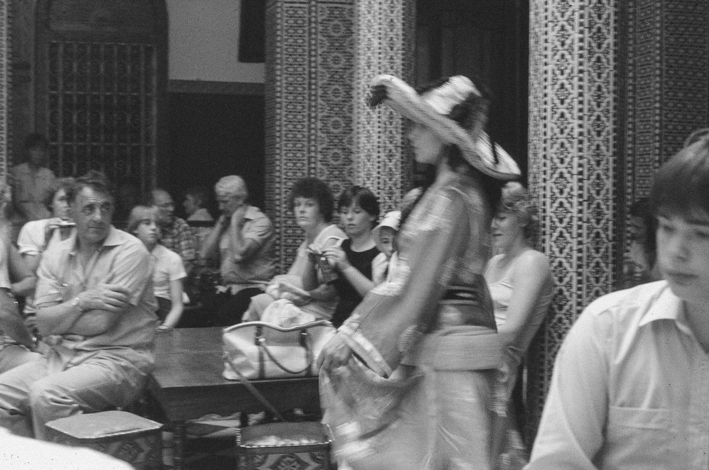
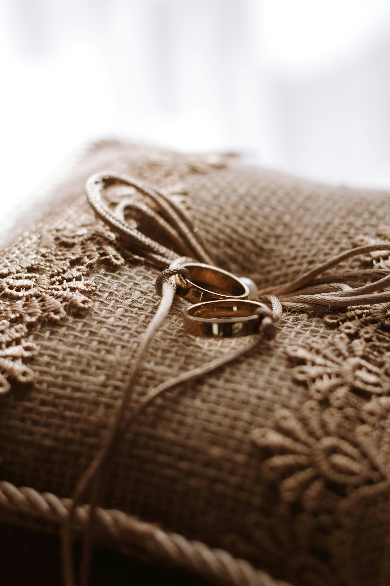

Stories of Heritage, Craftsmanship, and Soul.

At Maison de Rawan, we don't just create jewelry; we revive echoes. Our design philosophy is rooted in the belief that true beauty is timeless. We draw inspiration from ancestral motifs—patterns that have survived centuries—and refine them into minimalist statements for the modern woman who values her roots.

Every hammer strike is deliberate. Every etch is a story. Our artisans employ techniques passed down through generations, ensuring that no two pieces are identical. In an era of mass production, we choose the "Artisan’s Soul"—a celebration of imperfection and the human touch that gold alone cannot provide.

Opulence is not about being loud; it is about being authentic. We curate our materials—from the purest gold to the most soulful gemstones—to create jewelry that acts as an invitation. An invitation to embrace a richer heritage and to wear your story with a quiet, powerful confidence.